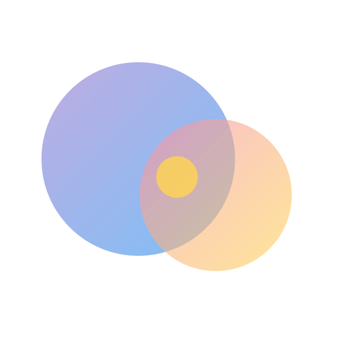
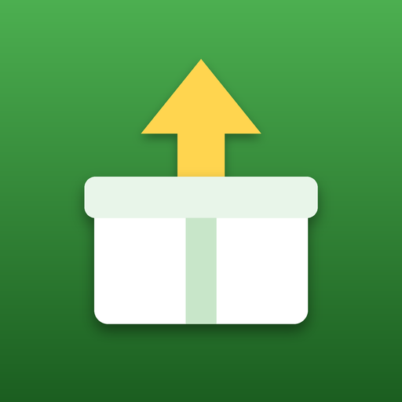
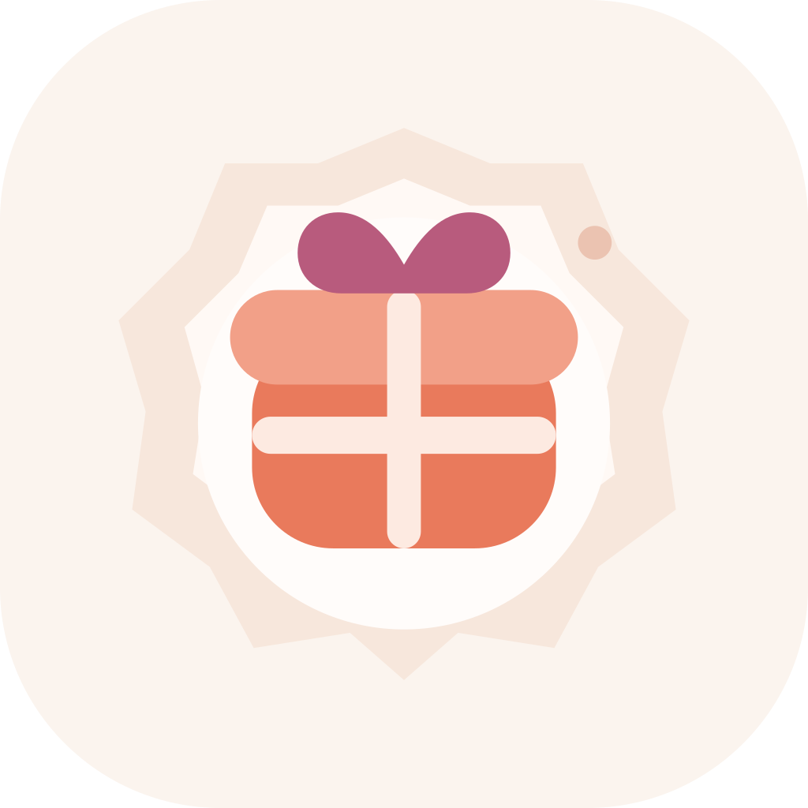
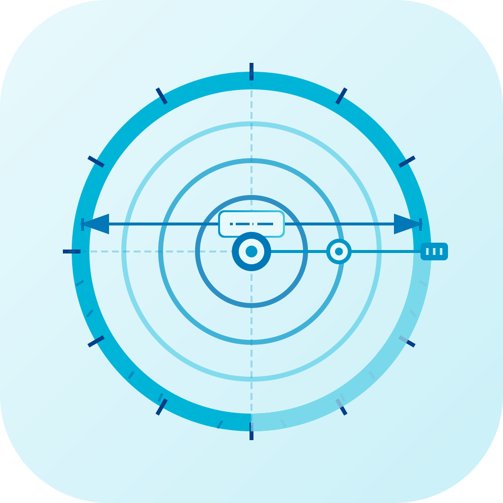

暮らしAndroid / iOS

はぐ育
ふたりで使う、育児記録と出産準備
授乳・睡眠・おむつの記録をリアルタイム共有。ToDoや名前候補も、ふたりのペースで残せます。
Independent app studio · Japan
記録する。学ぶ。遊ぶ。
生活のなかで自然に手が伸びるアプリを、ひとつずつ作っています。
App catalogue
暮らしの記録から、じっくり遊ぶゲームまで。
気になる用途や配信先から探せます。

ふたりで使う、育児記録と出産準備
授乳・睡眠・おむつの記録をリアルタイム共有。ToDoや名前候補も、ふたりのペースで残せます。
遊んだゲームを、自分だけの記録に
スコア、感想、プレイ時間を非公開で保存。Steam連携やネタバレ防止にも対応したゲーム管理アプリです。
GCP ACE 認定試験の学習を支援
4択問題、カテゴリ別分析、ストリークで、クラウド学習を毎日の習慣に変える学習アプリです。

フリマの利益を見える化
原価と目標利益から売値を逆算。仕入れ・在庫・売上もまとめて管理できます。

贈りものの記録と、AI提案
もらった・贈ったギフトや、大切な人の好み・記念日をひとつに記録します。

いつでも手元に、自分のサイズ
首周りから靴や指輪まで。全身のサイズを端末だけで記録・管理できます。
思考を、次のアイデアにつなげる
日常の考えを残し、AIが次のプロジェクトにつながるヒントを提案する日記アプリです。
放置して登る、ドット絵の塔
英雄が自動で無限の塔を登る、眺めて育てる放置RPGです。
推理だけで解ける★パズル
当て推量なし。各行・列・色の領域に星を置く、ロジックパズルです。
掘る人と、潜る人。ふたりで強くなる
採掘キャラと探索キャラの素材を、鍛冶屋で互いの装備に。ドット絵の放置RPGです。
この条件に一致する公開中アプリはありません。
How we build
Flutterを中心に、端末の中で心地よく動く体験と、必要なときに支えるクラウドを組み合わせています。